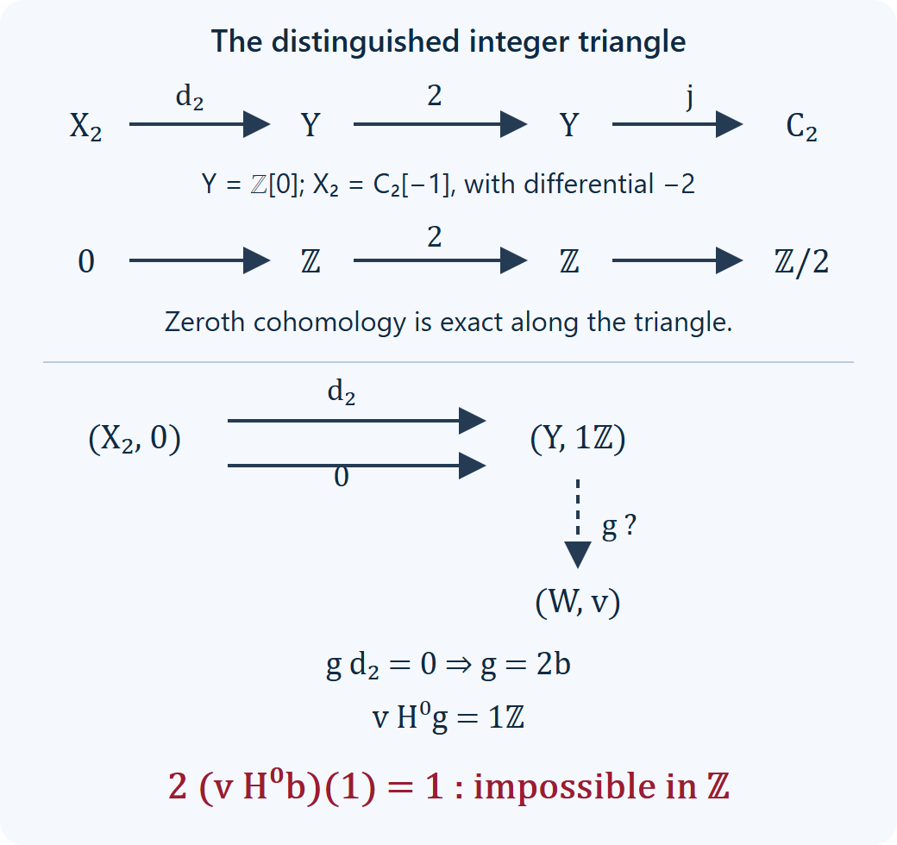

Draft lesson.
Triangles, finite universal maps and the limits of cohomology
Original text public domain (CC0).
A triangle provides factorizations of maps. A cohomology functor provides exact sequences in an abelian category. These statements have different consequences: a map into an abelian group need not extend from a subgroup, and a map from a group need not lift through a quotient. We identify precisely where these extension and lifting questions enter comma categories, then give an integer example in which cohomology exactness fails to supply the required categorical factorization.
Work in the universe and choice convention of Universes and small categories. The categories below are locally small in that convention, with an ambient enlargement when needed. Filteredness concerns finite diagrams and does not assert cofinal smallness. All functors called additive preserve addition on Hom groups. A triangulated category has its specified additive translation equivalence \([1]\) and distinguished triangles, with rotation convention \((g,h,-f[1])\).
Zero maps, components and subobjects, Section 1 gives the full comma constructions. Chain homotopies, mapping cones and triangles, Sections 1–6, gives the homotopy category, its cone triangles and exact cohomology sequences. We will use bounded complexes as a full triangulated subcategory: shifts, finite sums and cones remain bounded, and all the specified triangle maps and comparisons restrict to it.
1. Two precise exactness conditions
For a functor \(F: \mathcal D\to\mathcal A\) and \(a\in\mathcal A\), write
\[ K_a=(F\downarrow a),\qquad L_a=(a\downarrow F). \tag{1.1} \]An object of \(K_a\) is \((X,u: FX\to a)\); a map to \((Y,v)\) is \(f: X\to Y\) with \(vFf=u\). An object of \(L_a\) is \((X,u: a\to FX)\); its map to \((Y,v)\) satisfies \((Ff)u=v\).
We say that \(F\) is categorically right exact when every \(K_a\) is filtered, and categorically left exact when every \(L_a\) is cofiltered. Categorical exactness requires both. These are the conditions of Exactness through comma categories and small Kan values, Section 2, and make sense without assuming that the source has all finite limits or colimits.
For an additive functor \(H: \mathcal D\to\mathcal A\) with triangulated source and abelian target, cohomology exactness means that every distinguished triangle
\[ X\xrightarrow fY\xrightarrow gZ\xrightarrow hX[1] \tag{1.2} \]gives an exact sequence \(HX\to HY\to HZ\) at its middle term. Rotations give the entire long exact sequence. This covariant convention is often called homological; a contravariant functor is cohomological when the reversed sequence is exact. We will always state the variance.
Lemma 1.1. The functors \(\operatorname{Hom}_{\mathcal D}(W,-)\) and \(\operatorname{Hom}_{\mathcal D}(-,W)\) have these respective exactness properties. Consecutive triangle maps compose to zero.
Proof. Complete the first square from the identity triangle of \(X\) to (1.2), with first two vertical maps \(1_X,f\). The third vertical map starts at zero, so the square gives \(gf=0\). Rotating gives \(hg=0\) and \(f[1]h=0\).
Suppose \(a: W\to Y\) satisfies \(ga=0\). Rotate the identity triangle of \(W\) and (1.2) once. Their first vertices are \(W,Y\), their second vertices are \(0,Z\), and their third vertices are \(W[1],X[1]\). The first square with vertical maps \(a,0\) commutes. Its triangle completion gives \(d: W[1]\to X[1]\), and the last square says \(f[1]d=a[1]\). Full faithfulness of translation gives \(b: W\to X\) with \(b[1]=d\), and then \(fb=a\).
For the other variance, take \(a: Y\to W\) with \(af=0\). The triangle \(0\to W\xrightarrow1W\to0\) is distinguished: it is a rotation of an identity triangle, transported through translation and harmless vertex signs. Complete the first square from (1.2) into this triangle, with vertical maps \(0,a\). The completed map \(b: Z\to W\) satisfies \(bg=a\). Together with the zero-composite identities this proves both middle exactness assertions. Rotations prove them at all shifted positions. \(\square\)
Additivity preserves zero objects and finite biproducts. Indeed \(1_0=0\) remains that identity after applying the functor, and the injection/projection identities of a biproduct remain identities. These give the canonical biproduct comparison and its inverse.
2. Element categories detect exactly what is needed
Let \(G: \mathcal D^{\mathrm{op}}\to\mathsf{Ab}\) be additive. Its element category has objects \((X,x\in GX)\) and arrows \(f: (X,x)\to(Y,y)\) satisfying \(Gf(y)=x\).
Theorem 2.1. This element category is filtered if and only if \(G\) is contravariantly cohomological. For a covariant additive \(G: \mathcal D\to\mathsf{Ab}\), its element category, with equation \(Gf(x)=y\), is cofiltered if and only if \(G\) is covariantly cohomological.
Proof for the contravariant case. Suppose \(G\) is cohomological. The element \(0\in G0\) supplies an object. The biproduct and additivity supply a common receiver: the element corresponding to \((x,y)\) in \(G(X\oplus Y)\) has the two required pullbacks.
For parallel element arrows \(f,g: (X,x)\rightrightarrows(Y,y)\), put \(d=f-g\). Complete \(d\) to a triangle \(X\xrightarrow dY\xrightarrow qZ\to X[1]\). Since \(Gd(y)=0\), exactness supplies \(z\in GZ\) with \(Gq(z)=y\). Thus \(q: (Y,y)\to(Z,z)\) is an element arrow, and \(qd=0\) equalizes \(f,g\). These are all three filteredness conditions.
Conversely assume filteredness, and take (1.2). If \(y\in GY\) satisfies \(Gf(y)=0\), the maps \(f,0\) are parallel element arrows \((X,0)\rightrightarrows(Y,y)\). A common equalizing arrow gives \(r: Y\to V\) and \(v\in GV\) with \(rf=0\) and \(Gr(v)=y\). Lemma 1.1 supplies \(t: Z\to V\) with \(r=tg\). Therefore
\[ y=Gg\bigl(Gt(v)\bigr). \tag{2.1} \]The other containment follows from \(gf=0\). This is exactness at \(GY\).
Proof for the covariant case. An element of the biproduct gives a common source through its two projections. For parallel arrows \(f,g: (X,x)\rightrightarrows(Y,y)\), complete \(f-g\) to a triangle whose preceding map is \(q: Z\to X\). Cohomology exactness lifts \(x\), killed by \(G(f-g)\), to some \(z\in GZ\). The arrow \(q: (Z,z)\to(X,x)\) equalizes \(f,g\).
Conversely, if \(y\in GY\) is killed by \(Gg\) in (1.2), use the parallel arrows \(g,0: (Y,y)\rightrightarrows(Z,0)\). Cofilteredness gives \(r: V\to Y\), \(v\in GV\), with \(gr=0\) and \(Gr(v)=y\). Lemma 1.1 factors \(r=ft\) for some \(t: V\to X\); hence \(y=Gf(Gt(v))\). Zero composites give the reverse containment. \(\square\)
For an additive \(F: \mathcal D\to\mathcal A\), where \(\mathcal A\) is additive, define
\[ \begin{aligned} P_a(X)&=\operatorname{Hom}_{\mathcal A}(FX,a),\\ Q_a(X)&=\operatorname{Hom}_{\mathcal A}(a,FX). \end{aligned} \tag{2.2} \]The element categories of \(P_a,Q_a\) are exactly \(K_a,L_a\), including all arrow equations. Thus Theorem 2.1 proves the following full criterion.
Corollary 2.2. The functor \(F\) is categorically right exact if and only if every contravariant \(P_a\) is cohomological. It is categorically left exact if and only if every covariant \(Q_a\) is cohomological.
Corollary 2.3. Every triangulated functor between triangulated categories is categorically exact.
Proof. A triangulated functor sends an entire distinguished triangle to a distinguished triangle, using its specified translation comparison on the last arrow. Lemma 1.1 in the target gives the requisite exactness of both functors in (2.2). Apply Corollary 2.2. Additivity is part of the triangulated functor structure. No existence of categorical kernels, compact objects or cofinal smallness is used. \(\square\)
3. Injective and projective labels
Theorem 3.1. Let \(H: \mathcal D\to\mathcal A\) be additive and covariantly cohomological, with \(\mathcal A\) abelian.
- If \(a\) is injective, \((H\downarrow a)\) is filtered.
- If \(a\) is projective, \((a\downarrow H)\) is cofiltered.
Proof. Apply \(H\) to (1.2). If \(v: HY\to a\) kills \(Hf\), it descends to \(HY/\operatorname{im}Hf\). Exactness identifies this quotient with the subobject \(\operatorname{im}Hg\subseteq HZ\). Injectivity of \(a\) extends that descended map to \(HZ\to a\). Thus \(P_a\) is exact at \(P_a(Y)\), with the other containment supplied by zero composites. The argument applies to every rotation. Corollary 2.2, or its proof for this one object, gives the first assertion.
If \(u: a\to HY\) is killed by \(Hg\), it factors through \(\ker Hg=\operatorname{im}Hf\). The map \(HX\to\operatorname{im}Hf\) is epic, so projectivity lifts this factor to \(a\to HX\). Hence \(Q_a\) is cohomological, and the covariant half of Theorem 2.1 gives the second assertion. \(\square\)
These sufficient conditions are exact characterizations for ordinary zeroth cohomology. Let
\[ H^0: K^b(\mathsf{Ab})\longrightarrow\mathsf{Ab}. \tag{3.1} \]This functor is additive and cohomological by the explicit cone/cohomology argument in the prerequisite. It is defined on homotopy classes since a null-homotopic map has zero induced map on cycles modulo boundaries.
Theorem 3.2. For (3.1), \((H^0\downarrow a)\) is filtered exactly when \(a\) is injective. The category \((a\downarrow H^0)\) is cofiltered exactly when \(a\) is projective.
Proof. Sufficiency is Theorem 3.1. For necessity in the first assertion, let \(u: L\hookrightarrow M\) be any monomorphism of abelian groups, regarded as a chain map in degree zero. Its cone has \(L\) in degree \(-1\), \(M\) in degree zero and differential \(u\). Thus \(H^{-1}(C_u)=0\). In the rotated distinguished triangle
\[ C_u[-1]\longrightarrow L[0]\xrightarrow uM[0]\longrightarrow C_u \tag{3.2} \]the first object's zeroth cohomology is zero. Filteredness and Corollary 2.2 imply that
\[ \operatorname{Hom}(M,a)\longrightarrow \operatorname{Hom}(L,a)\longrightarrow0 \tag{3.3} \]is exact. Every map from a subgroup to \(a\) therefore extends across its inclusion. This is injectivity.
For the second assertion, start with any epimorphism \(u: M\twoheadrightarrow N\). Here \(H^0(C_u)=0\). The triangle \(M[0]\to N[0]\to C_u\to M[1]\), combined with the covariant criterion, makes \(\operatorname{Hom}(a,M)\to\operatorname{Hom}(a,N)\) surjective. Every map from \(a\) lifts across every epimorphism, which is projectivity. \(\square\)
In particular, \(\mathbb Z\) is projective: lift the image of its generator through an epimorphism and extend by integer multiples. It is not injective: the identity map on \(2\mathbb Z\), identified with \(\mathbb Z\) by \(2n\mapsto n\), does not extend to a homomorphism \(\mathbb Z\to\mathbb Z\). Such an extension would send \(2\) to \(1\), which is impossible. Thus one comma condition for (3.1) holds at \(a=\mathbb Z\), while the other fails there.
4. What every additive functor still preserves
The failure above does not imply failure to preserve a finite universal object that already exists in the triangulated source.
Lemma 4.1. Monomorphisms and epimorphisms in a triangulated category split. A morphism having either a categorical kernel or a categorical cokernel is isomorphic to a biproduct matrix
\[ K\oplus V\longrightarrow V\oplus Q, \qquad(k,v)\longmapsto(v,0). \tag{4.1} \]The formula is biproduct notation, not an assumption that objects have elements.
Proof. First consider a distinguished triangle \(X\xrightarrow fY\xrightarrow gZ\xrightarrow hX[1]\) with \(h=0\). Lemma 1.1 gives \(s: Z\to Y\) with \(gs=1\). For every \(W\), the sequence
\[ 0\to\operatorname{Hom}(W,X)\to \operatorname{Hom}(W,Y)\to\operatorname{Hom}(W,Z)\to0 \tag{4.2} \]is split exact: the preceding map is induced by \(h[-1]=0\), and \(s\) is a section. Consequently \([f,s]: X\oplus Z\to Y\) induces a bijection on Hom from every \(W\). Surjectivity with \(W=Y\) gives a right inverse, and injectivity with \(W=X\oplus Z\) makes it a left inverse too. This is the split triangle decomposition.
If \(f\) is monic, its composite with the preceding triangle map is zero, so that preceding map, and hence \(h\), is zero. The decomposition makes \(f\) a summand inclusion. If \(f\) is epic, \(gf=0\) gives \(g=0\). Exactness of \(\operatorname{Hom}(Y,-)\) then gives \(s: Y\to X\) with \(fs=1\). Apply the monomorphism result to this section \(s\). Its summand complement can be modified by \(1-sf\); the resulting decomposition of \(X\) makes \(f\) a summand projection.
Now suppose \(k: K\to X\) is a kernel of \(f: X\to Y\). It is monic, so choose a decomposition \(X=K\oplus V\) with \(k\) the first inclusion. The map \(f\) is \([0,f_V]\). The map \(f_V\) is monic: any map it kills, included into \(X\), factors through \(K\) by the kernel property, and projection back to \(V\) makes that map zero. Split \(f_V\) to obtain \(Y=V\oplus Q\), giving (4.1).
If instead \(q: Y\to Q\) is a cokernel, split this epimorphism as \(Y=V\oplus Q\). The map \(f\) factors as \(f_V: X\to V\) followed by the first inclusion. The map \(f_V\) is epic: a map from \(V\) which kills it, extended by zero on \(Q\), factors through the cokernel \(q\), so its restriction to \(V\) is zero. Split \(f_V\), obtaining \(X=K\oplus V\) and again (4.1). \(\square\)
Theorem 4.2. Every additive functor from a triangulated category into an additive category preserves every specified existing finite limit and finite colimit, with its canonical legs.
Proof. The matrix (4.1) has kernel the inclusion of \(K\) and cokernel the projection to \(Q\). Applying any additive functor preserves these biproducts and all four zero/identity matrix components. It therefore preserves every existing kernel and cokernel, including their actual universal maps after transporting through the chosen isomorphisms.
For a finite category \(I\) and \(A: I\to\mathcal D\), put \(P=\bigoplus_{i\in\operatorname{Ob}I}A_i\). Define
\[ d: P\longrightarrow\bigoplus_{\alpha: i\to j}A_j, \quad \operatorname{pr}_{\alpha}d =A(\alpha)\operatorname{pr}_i-\operatorname{pr}_j. \tag{4.3} \]A map \(W\to P\) is killed by \(d\) exactly when its component maps form a cone on \(A\). Thus the specified limit, if it exists, is exactly the categorical kernel of \(d\), with its projections. The functor preserves that kernel and the finite sums making (4.3); the image matrix describes cones on \(FA\). This proves limit preservation with the original legs.
Dually, the cokernel of the map
\[ e: \bigoplus_{\alpha: i\to j}A_i\longrightarrow P, \quad e\operatorname{in}_{\alpha} =\operatorname{in}_jA(\alpha)-\operatorname{in}_i \tag{4.4} \]is precisely the colimit when it exists. Its cokernel and finite sums are preserved, giving the original coprojections after applying the functor. Empty diagrams use the zero object and empty biproducts, so are included. Finiteness here means finitely many objects and arrows. \(\square\)
The source need not have every finite limit or colimit. Consequently this theorem cannot be used with a converse theorem whose premise is existence of all finite universal objects. Cohomology exactness also remains a separate condition; Theorem 4.2 only needs additivity.
5. The integer obstruction, with its actual complex
Let \(Y=\mathbb Z[0]\). The cone of multiplication by \(n\geq2\) has \(\mathbb Z\) in degrees \(-1,0\), with differential \(n\). Set \(X_n=C_n[-1]\). Its two nonzero terms are in degrees \(0,1\), with differential \(-n\). Inverse rotation gives the distinguished triangle
\[ X_n\xrightarrow{d_n}Y\xrightarrow nY\longrightarrow X_n[1]. \tag{5.1} \]Here \(d_n^0=-1\), and \(d_n^1=0\). Multiplication by \(n\) composed with \(d_n\) is null-homotopic: the homotopy \(X_n^1\to Y^0\) is \(1\), and its degree-zero contribution is \(-n\). Also \(H^0X_n=0\), since \(-n: \mathbb Z\to\mathbb Z\) is injective.
For a group \(a\) and element \(a_0\in a\), let \(s: Y\to a\) denote the group map \(1\mapsto a_0\). There are parallel arrows
\[ d_n,0: (X_n,0)\rightrightarrows(Y,s) \quad\text{in }(H^0\downarrow a). \tag{5.2} \]Proposition 5.1. This pair has an equalizing arrow if and only if \(a_0\in na\).
Proof. Suppose \(g: (Y,s)\to(W,v)\) equalizes it. Then \(gd_n=0\) in the homotopy category. Exactness of \(\operatorname{Hom}(-,W)\) on (5.1) gives \(b: Y\to W\) with \(g=b\circ n\). The comma equation is \(vH^0g=s\). Evaluating at \(1\) gives
\[ a_0=n\,v\bigl(H^0b(1)\bigr), \tag{5.3} \]so \(a_0\in na\).
Conversely, if \(a_0=na_1\), choose \(W=Y\), \(g=n\), and \(v(1)=a_1\). The null-homotopy above gives \(gd_n=0\), and \(vH^0g=s\), so this is the required comma arrow. \(\square\)
For \(n=2,a=\mathbb Z,a_0=1\), equation (5.3) would say that \(1\) is twice an integer. The parallel pair has no equalizing arrow. Hence \(H^0\) is cohomological but is not categorically right exact, and therefore is not categorically exact. The example uses the actual bounded two-term complex; it needs no derived localization or identification of a cone with a quotient object.

The top row is the distinguished triangle of (5.1), specialized to \(n=2\); the lower panel displays the required equalizer in (5.2). Exact Hom forces \(g=2b\), while the comma label would require \(vH^0g=1\). Together they force the impossible equation \(2(vH^0b)(1)=1\). The two arrows from \((X_2,0)\) are distinct but induce the same cohomology label.
They are indeed distinct: if \(d_2=0\), exactness in (5.1) with target \(Y\) would factor \(1_Y\) through multiplication by two. But \(\operatorname{End}_{K^b(\mathsf{Ab})}(Y)=\mathbb Z\): chain maps are integer multiplications and there are no nonzero homotopies between degree-zero complexes. Such a factorization would require an integer \(b\) with \(2b=1\).
6. Four graded exercises with complete solutions
Exercise 1 (basic: divisible labels). Use (5.2) with \(n=3\), \(a=\mathbb Z/12\mathbb Z\), and labels \(a_0=6\) and \(a_0=4\). Decide which pair can be equalized. Give the entire equalizing comma arrow when it exists, and explain why the two labels behave differently.
Solution. Multiplication by three on \(\mathbb Z/12\mathbb Z\) has image \(\{0,3,6,9\}\). The label six equals \(3\cdot2\). Choose \(W=Y\), the homotopy-category map \(g=3: Y\to Y\), and \(v: H^0Y\to\mathbb Z/12\mathbb Z\) with \(v(1)=2\). The composite \(gd_3\) is zero by the displayed null-homotopy, while \(vH^0g(1)=6=s(1)\); equality on the generator gives the full comma equation. The label four lies outside the image, so necessity in Proposition 5.1 rules out every possible receiver, including complexes with additional terms. This is a divisibility obstruction, not an inference that one particular choice of cone fails.
Exercise 2 (intermediate: the other comma). Construct an explicit parallel pair showing that \((\mathbb Z/2\mathbb Z\downarrow H^0)\) is not cofiltered. Use the cone triangle \(Y\xrightarrow2Y\xrightarrow jC_2\xrightarrow pY[1]\).
Solution. We have \(H^0C_2=\mathbb Z/2\mathbb Z\) and \(H^0Y[1]=0\). Hence \(p,0\) are parallel arrows from \((C_2,1)\) to \((Y[1],0)\) in the incoming comma. If a source \((W,u)\) equalized them through \(r: W\to C_2\), then \(pr=0\) and \(H^0r\,u=1\). The exact Hom sequence supplies \(t: W\to Y\) with \(r=jt\). But \(H^0t\,u: \mathbb Z/2\mathbb Z\to\mathbb Z\) is zero: twice the image of its generator is zero, and \(\mathbb Z\) has no nonzero element killed by two. Thus \(H^0r\,u=H^0j\,H^0t\,u=0\), contradicting the identity. No common equalizing source exists.
Exercise 3 (advanced: an absent universal object). Show that multiplication by two on \(Y=\mathbb Z[0]\) has neither a categorical kernel nor a categorical cokernel in \(K^b(\mathsf{Ab})\). Explain why this does not contradict the preservation theorem of Section 4.
Solution. If either universal object existed, Lemma 4.1 would give the split matrix (4.1). That matrix has a generalized inverse, mapping \((v,q)\) to \((0,v)\), and hence the original map \(f\) would have a map \(r: Y\to Y\) with \(frf=f\). Endomorphisms of \(Y\) are integer multiplications, so \(r\) would give an integer \(m\) with \(4m=2\), impossible. This excludes either universal object. In the abelian target, multiplication by two does have kernel zero and cokernel \(\mathbb Z/2\mathbb Z\), but they have no corresponding kernel/cokernel universal maps in this triangulated source. Theorem 4.2 only promises preservation of universal maps that exist in the source.
Exercise 4 (synthesis: a correct positive case). Let \(k\) be a field and \(\mathcal D\) any triangulated category. Prove that every additive cohomological functor \(H: \mathcal D\to\mathsf{Vect}_k\) is categorically exact. State separately what holds for existing finite limits and colimits if \(H\) is merely additive.
Solution. Every vector space is injective and projective. Here is the basis existence and extension argument used in both assertions. The well-ordering and set recursion proofs in Well-orders, cardinal bounds and regular successors, Sections 2–3 let us traverse the underlying set of a vector space. Retain a vector exactly when it is outside the span of the vectors retained earlier. A finite nontrivial dependence among retained vectors would express its last vector as a combination of earlier ones, contradicting its selection. Every vector is either retained or was already in the earlier span, so the retained vectors span and form a basis. Starting the same procedure with a given linearly independent set extends that set to a basis, by the identical last-vector argument. In particular it extends a basis of a subspace to a basis of the ambient space. For injectivity, choose a basis of a subspace, extend it to a basis of the larger space, and extend a given linear map by zero on the added basis vectors. This extends across every monomorphism after identifying it with its image. For projectivity, choose a basis of the domain of the map to be lifted, choose a preimage for each basis-vector image through the specified surjection, and extend linearly. The ambient choice convention supplies both selections; all chosen data stay in the working universe. Theorem 3.1 now makes every outgoing comma filtered and every incoming comma cofiltered, proving categorical exactness. If \(H\) is only additive, Theorem 4.2 still proves preservation of all specified existing finite limits and colimits. It supplies no comma exactness assertion without the cohomology premise in this positive case.
7. Freely accessible references
- The Stacks Project Authors, The definition of a triangulated category and Elementary results on triangulated categories, particularly the exact Hom sequences and the splitting result for maps with a kernel or cokernel. The arguments and comma criteria needed here are written out above.
- The Stacks Project Authors, Distinguished triangles in the homotopy category. The preceding cone lesson checks the chosen positive cone-projection convention, its rotations and cohomology exactness explicitly.